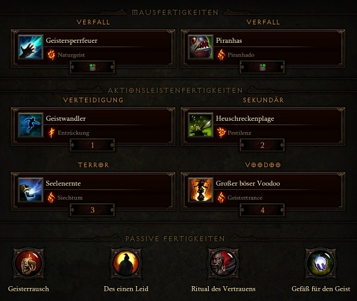

Hexendoktor
Mundunugus Build
Auch der Beste Build für den Hexendoktor bekommt ein kleines Update. In Season 22 und mit Hilfe vom vierten Slot in Kanais Würfel gibt es noch eine zusätzliche Waffe: Vus Entsafter. Auch in der neuen Season gilt weiterhin: Geistersperrfeuer zählt nicht mehr als PET. Somit müssen wir Items & Skills anpassen, um weiterhin mit dem neuen Set: Mundunugus Ornat zu spielen.
Video Guide
Skillung
{kind=link}
Items
| Itemslot | Items | Stats |
|---|---|---|
| Waffe | Vus Entsafter | Intelligenz > 10% DMG > Sockel |
| Offhand | Glotzender Tod | Intelligenz > ChC > Geistersperrfeuer DPS |
| Kopf | Mundunugus Ornat | Intelligenz > ChC > Sockel > Vitalität |
| Brustrüstung | Mundunugus Ornat | Intelligenz > x3 Sockel > ALL Resii |
| Schultern | Mundunugus Ornat | Intelligenz > Vitalität > Rüstung |
| Beine | Mundunugus Ornat | Intelligenz > x2 Sockel > Rüstung |
| Hüfte | Kapitän Karmesins Seidenschärpe | Intelligenz > Rüstung > %Leben |
| Füße | Kapitän Karmesins Watstiefel | Intelligenz > Geistersperrfeuer DPS |
| Handgelenke | Lakumbas Zierde | Intelligenz > ChC > 20% Kälteschaden |
| Hände | Mundunugus Ornat | Intelligenz > ChC > ChD/td> |
| Amulette | Schwur des Abenteurers | ChC > ChD > 20% Kälteschaden |
| Ringe |
|
Sockel > ChC > ChD |
Verwendete Abkürzungen
ChC = Kritische Trefferwertung, ChD = Kritischer Trefferschaden, CDR = Abklingzeitreduktion, IAS = Angriffsgeschwindigkeit, RcR = Ressourcenkostenreduktion, LoH = Leben pro Treffer, AD = Flächenschaden